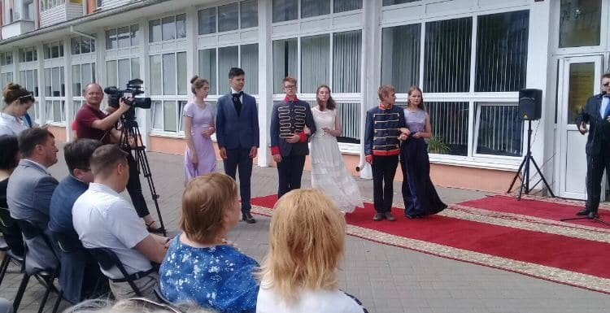

У ліцеї я був дуже активним учнем. Я брав участь в олімпіадах, грав в ліцейському театрі, був членом ліцейської думи і членом БРСМ.В ліцейському театрі я відіграв 3 роки, за цей час я відіграв багато ролей в різних спектаклях. С нашою трупою ми вигравали багато нагород, виступали у філармонії і в школах. Також я брав участь в конкурсах на читання віршів і ставив спектаклі. Також я грав в міському театрі. Я брав участь в районній олімпіаді з географії і з інших предметів.
